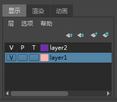

- 在状态行（工具栏）中：单击“通道盒/层编辑器”(Channel Box/Layer Editor)图标
- 在主菜单栏中：
此编辑器可用于组织场景中的对象，以便同时显示、隐藏或编辑这些对象。
在默认的 Maya 布局中，通过单击选项卡，可以在“显示层编辑器”(Display Layer Editor)与“动画层编辑器”(Animation Layer Editor)之间进行切换。
“显示层编辑器”(Display Layer Editor)的“名称”(Name)列中的“V”、“P”和“T”
每个层名称旁边显示的 V、P 和 T 框是视图设置，您可以启用和禁用它们。
显示层编辑器菜单
“层”(Layers)菜单
- 创建空层(Create Empty Layer)
-
根据下拉列表中的选择，使用默认名称（如 layer1）创建新显示层。
- 从选定对象创建层(Create Layer from Selected)
- 使用选定对象创建显示层。
- 选择选定层中的对象(Select Objects in Selected Layers)
-
选择选定层中包含的对象。
- 从选定层中移除选定对象(Remove Selected Objects from Selected Layers)
-
从选定层中移除所有对象，然后将它们指定给默认层。选定层将变为空层，这样就可以指定其他对象。
- 会员资格
-
打开“关系编辑器”(Relationship Editor)以从层中移除对象或将对象添加到层中。
- 属性(Attributes)
-
为选定层打开“属性编辑器”(Attribute Editor)。“属性编辑器”(Attribute Editor)中的某些属性不能通过“编辑层”(Edit Layer)窗口使用。
- 删除选定层(Delete Selected Layers)
-
删除选定层，但不删除层中的对象。
- 删除未使用的层(Delete Unused Layers)
-
删除没有任何内容的层。
- 设置所有层(Set All Layers)/设置选定层(Set Selected Layers)/仅设置选定层(Set Only Selected Layers)
-
可以设置所有层或选定层的特性。设置选定层的特性时，可以指定未选定的层是否将受到影响。
可以设置下列特性：- 可见/不可见(Visible/Invisible)
- 可见播放/不可见播放(Visible Playback/Invisible Playback)
- 正常/模板/引用(Normal/Template/Reference)
- 全部细节/边界框(Full Detail/Bounding Box)
- 着色/未经着色(Shaded/Unshaded)
- 带纹理/未上纹理(Textured/Untextured)
在“显示层”(Display layer)上单击鼠标右键时，也会出现上面的层设置菜单项。
- 按字母顺序对层排序(Sort Layers Alphabetically)
-
按名称对层排序。
- 按时间顺序对层排序(Sort Layers Chronologically)
-
按创建时间对层排序。
“选项”(Options)菜单
可以设定下列二进制选项：
- 将新层作为当前层(Make New Layers Current)
- 将新对象添加到当前层(Add New Objects to Current Layer)
-
显示名称空间(Show Namespace)
使用名称空间时，对象名称有时可能会变得很长。这使得很难按名称区分对象。禁用名称空间的显示会使用“...:”替换节点名称的名称空间部分（如果存在）。缩短的名称使得区分场景中的不同对象更为容易。
注：在 Maya 中使用文件引用时，名称空间是管理命名的首选方法。建议在使用文件引用时，不要使用 Maya 的重命名前缀约定。尽管使用重命名前缀时，节点的 DAG 路径或长名称可能使该节点成为唯一，但是这些路径或长名称不能在文件引用内一致地工作，并会使层次 DAG 更改复杂化，这可能会导致以后的问题。
上下文相关菜单
在层上单击鼠标右键时，可以使用以下命令：
- 添加选定对象(Add Selected Objects)/移除选定对象(Remove Selected Objects)/选择对象(Select Objects)
-
将对象添加到显示层或从显示层中移除对象。也可以选择当前显示层中的所有对象。
- 设置所有层(Set All Layers)/设置选定层(Set Selected Layers)/仅设置选定层(Set Only Selected Layers)
-
请参见上文。
- 清空层(Empty the Layer)
-
从层中移除所有对象，使其为空层。
- 删除层
-
删除层。
- 删除选定层(Delete Selected Layers)
-
删除所有选定图层。
- 会员资格
-
请参见上文。
- 属性(Attributes)
- 可以设定以下层属性。
- displayLayer
-
键入层的名称。
- 启用覆盖(Enable Overrides)
-
禁用该选项可禁用层的效果。将显示层中的对象，且这些对象的行为就好像它们不属于该层一样。
- 显示类型
-
选择层显示的方式。
- 法线(Normal)
-
根据层的设置，层中的对象会正常显示。可以选择层中的对象并捕捉到它们。
- 模板(Template)
-
层中的对象会变为模板。可以在工作区中看到模板对象，但无法选择它们，也无法捕捉它们。
- 参考
-
可以捕捉到层中的对象，但无法选择或修改它们。
- 细节级别
-
为层对象选择显示细节的级别：
- “全剖”
-
为层对象显示全部细节。
- 边界框(Bounding box)
-
将对象显示为表示其边界体积的框。边界框会加快 Maya 操作，对于复杂模型会产生显著的差异。
- 着色
-
处于着色显示中时，启用该选项可使层对象看起来已着色。
- 纹理
-
处于着色显示中时，启用该选项可显示层对象上的纹理。
- 可见(Visible)
-
启用该选项可使层中的对象可见。
- 颜色(Color)
-
选择属于该层的所有对象的颜色。
- 编号
-
这是指定给层的编号。
导入文件时合并显示层
若要在读入文件时简化层的合并，请选择“窗口 > 设置/首选项 > 首选项”(Windows > Settings/Preferences > Preferences)，请单击“文件/项目”(Files/Projects)类别，然后在“显示层”(Display Layer)部分中，为“文件导入合并”(File Import Merge)选择以下选项之一：
- 无(None)
-
如有必要保持唯一性，会将读入的所有层放置在一个新层中，对其重新编号并重命名。
- 按编号(By Number)
-
会将读入的所有层（这些层具有与现有层相同的索引编号）与该层合并，而不是创建一个新层。
- 按名称(By Name)
-
会将读入的所有层（这些层具有与现有层相同的名称）与该层合并，而不是创建一个新层。
按颜色识别显示层
可以将每个显示层与一种不同的颜色相关联，以便更易于识别哪些对象位于“Hypergraph”中和场景视图中的每个显示层中。
如果选定了对象或节点，那么在“Hypergraph”中该对象或节点仍显示为黄色，且在场景视图中轮廓变为绿色。如果未选定对象和节点，则仅会看到每个显示层的颜色。
将每个显示层与某种颜色相关联
- 在“渲染层编辑器”(Render Layer Editor)中单击“显示”(Display)（“窗口 > 渲染编辑器 > 渲染层编辑器”(Window > Rendering Editors > Render Layer Editor)）以查看显示层。
- 在“显示层编辑器”(Display Layer Editor)中选择所需的层，然后双击颜色框（位于层名称旁边）。
- 在显示的“编辑层”(Edit Layer)对话框中，选择一种颜色，然后单击“保存”(Save)。
选定层中的所有对象将以指定的颜色显示在场景视图中，且选定层中的所有节点将以指定的颜色显示在“Hypergraph”中。
在此图像中，层 1 与粉红色关联，层 2 与紫色关联。